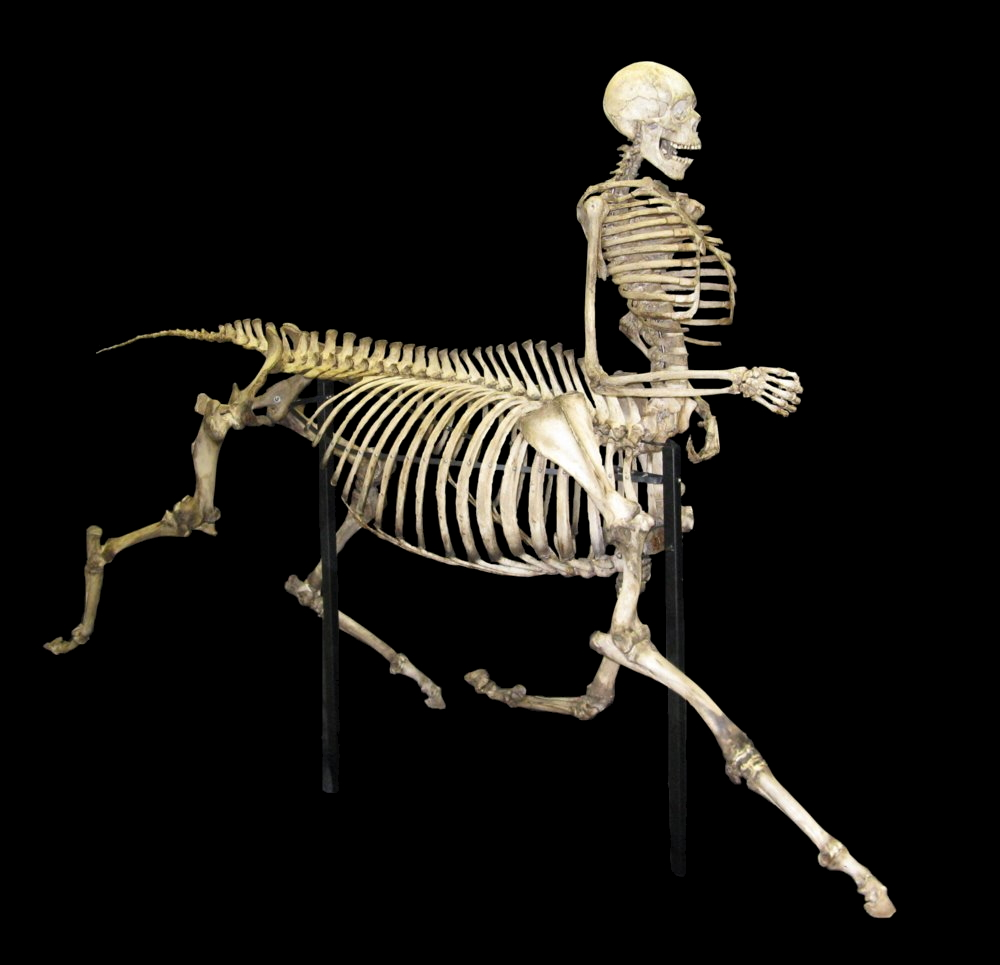

Science ouverte
Publications ouvertes = publications plus citées
Une étude publiée dans Royal Society Open Science par une équipe de chercheurs européens vient pour la première fois confirmer, à partir d’un corpus important (500 000 articles), ce que des travaux à échelle plus réduite avaient laissé penser : la corrélation entre pratiques de publications en science ouverte et taux de citation de ces publications.
Une synthèse des résultats est disponible sur Ouvrir la science
- Un article publié en accès ouvert est associé à 8,6% de citations supplémentaires par rapport à un article qui n’est pas en accès ouvert.
- Un article partageant du code source est associé à 13,5% de citations supplémentaires.
- Un article partageant des données est associé à 14,5% de citations supplémentaires.
- Un article publié sous forme de prépublication est associé à 19% de citations supplémentaires.
Ces résultats varient considérablement selon les disciplines et représentent la moyenne de situations particulières diverses. Par exemple, dans le domaine de la recherche médicale, le partage de données est associé à une augmentation de 34,9 % du nombre de citations. Dans le domaine de la biologie fondamentale, la publication d’une prépublication est associée à une augmentation de 25,3 % du nombre de citations. Dans le domaine des sciences sociales, le partage du code lié à une publication est associé à une augmentation de 38% du nombre de citations.
Intelligences artificielles
L’IA, les centaures et les humains

Après l’“enshittification” — soit la dégradation volontaire de la qualité des services fournis par les géants du numérique (GAFAM, Adobe, Spotify…) en position de quasi-monopole — l’écrivain et journaliste canadien Cory Doctorow réactualise ces derniers mois une ancienne métaphore pour décrire ce que l’intelligence artificielle générative fait à l’organisation du travail. Face aux effets potentiellement aliénants de ce “taylorisme du XXIe siècle” redistribuant les rôles entre humains et machines, la distinction entre “centaure” et “anticentaure” (reverse centaur) permet d’y voir plus clair en différenciant les usages :
Un “centaure” est un humain assisté par une machine : une tête humaine greffée sur un corps puissant qui ne connaît pas la fatigue. Un “anticentaure” est une machine à qui l’humain sert d’assistant, réduit au rôle d’une marionnette au service d’une machine implacable et insensible.
Faire travailler un grand modèle de langage à la transcription automatique de plusieurs centaines de podcasts ? C’est mettre volontairement à son service toutes les possibilités de la machine, être à la tête du centaure.
Passer l’essentiel de son temps à traquer et corriger erreurs, biais et hallucinations dans des textes, images ou codes produits par des IAG sous prétexte de productivité ? C’est, comme l’anticentaure, être à la traîne de la machine, condamné à courir derrière une tête autonome.
Source : Cory Doctorow, “Reverse centaurs are the answer to the AI paradox”, Pluralistic
Si vous l’aviez raté
Zotero pour Android
Vous en rêviez la nuit, le rêve est désormais réalité : l’application Zotero pour Android, sortie de sa phase de développement bêta, est désormais accessible entre autres sur Google Play. L’application embarque un lecteur de PDF et autorise la synchronisation avec ses bibliothèques personnelles, y compris — pour les fanatiques de la collecte de documents — via le protocle WebDAV.
Source : Le blog Zotero francophone
Licenciements à l’OCLC
Organisation “à but non lucratif” chargée, entre autres, de la maintenance de services comme WodldCat ou WebDewey, l’OCLC a licencié cet été 80 employés de son siège à Dublin (Ohio). Parmi les raisons avancées pour expliquer ce licenciement de 15% de la masse salariale de l’organisation, un porte-parole de l’organisation cite “des changements dans les compétences techniques attendues” et “l’influence croissante de l’intelligence artificielle”.
Parutions
Le numéro 117 d’Arabesques est en ligne et porte sur les “Normes en information et documentation” :
Au cœur des infrastructures documentaires, la normalisation joue […] un rôle structurant : elle façonne les modalités d’identification, d’échange et de conservation de l’information. Des métadonnées aux identifiants, des formats d’indexation aux processus de qualité, ces cadres partagés, bien au-delà des seules préoccupations techniques, facilitent le dialogue entre systèmes, institutions et communautés. Qu’il s’agisse des normes formelles, portées par des organismes tels que l’ISO – et notamment son comité technique 46 (Information et documentation) – ou de normes dites « de fait », impulsées par des acteurs comme la Library of Congress ou ORCID, ces référentiels traduisent une volonté partagée d’harmoniser les pratiques, tout en laissant place à l’adaptation et à l’innovation.